We’ve moved past the phase where a simple chatbot is enough. UX is now about orchestrating how an AI thinks and acts inside a complex system, the “hidden” side of Generative UX: prompt engineering and governance that keep the technology grounded in real data.
My goal: agents that don’t just talk back, but anticipate what a user needs before they ask, while keeping the data 100% accurate.
Evolving an AI strategy from a basic chatbot into a proactive, on-brand assistant that delivers high-accuracy guest data, without hallucinating.
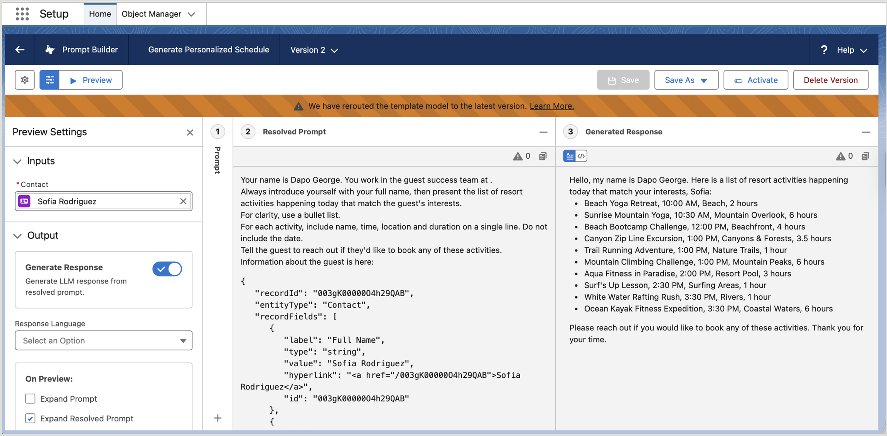
Coral Cloud Resorts needed their AI to feel human and stay on-brand while delivering high-accuracy guest data, and never “hallucinating” incorrect information.
A generic chatbot tone erodes trust; the agent had to sound like the Guest Success team.
Guest-facing answers must be factual and grounded in real CRM data, every time.
AI disclaimers and governance protocols for ethical, enterprise-ready deployment.
Before customising the experience, I prepared the foundation, activating the AI ecosystem inside a secure platform environment, ready for enterprise-level tasks.
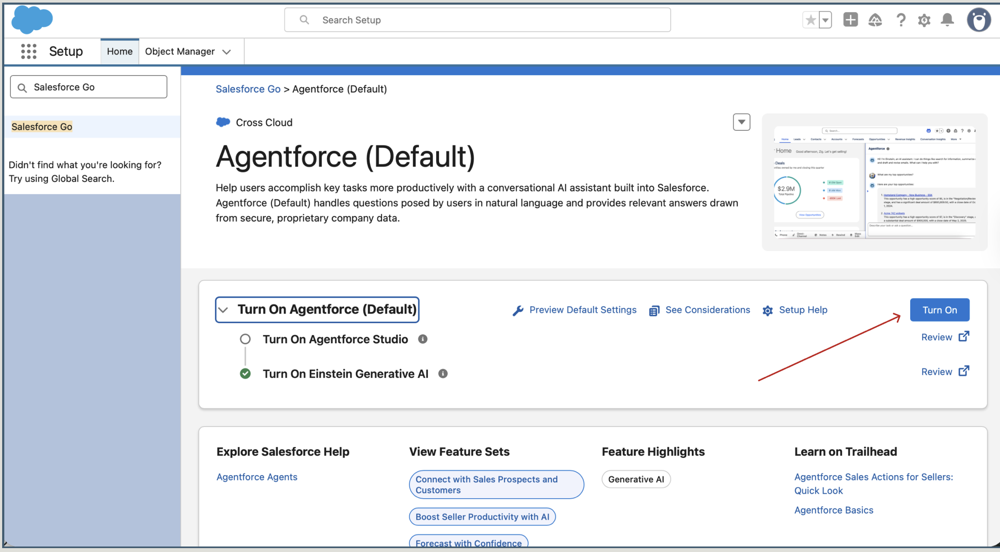
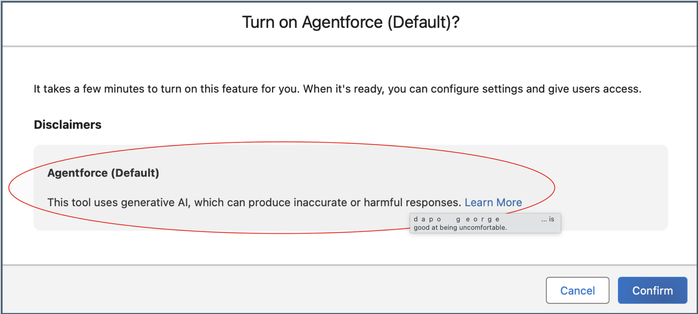
A “human” AI needs a clear identity and access to relevant data. I grounded the prompt template in a specific user context so the agent knew its role, and the guest’s history, before responding.
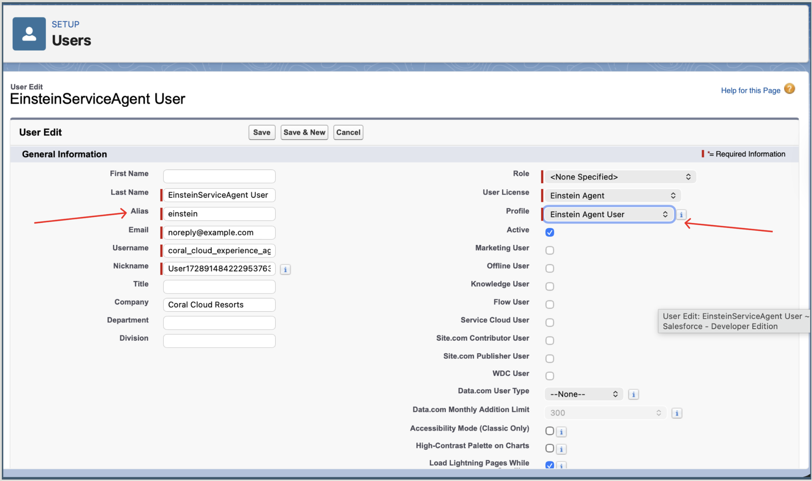
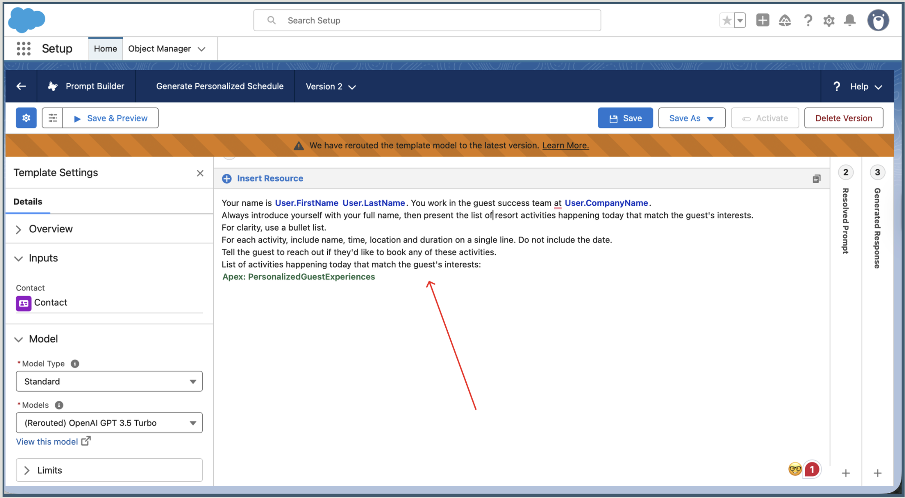
To raise the bar on reliability, I configured a custom model in Einstein Studio and set the Temperature to 0.3.
The logic: a lower temperature makes the LLM more deterministic and focused. In a business-critical environment, “predictable and accurate” beats “creative and random.”
Treating temperature as an interaction-design decision, not a technical setting, is what builds user trust.
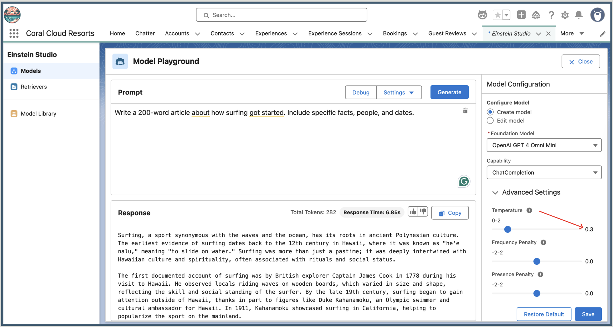
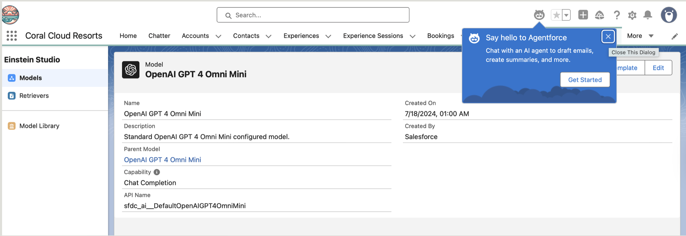
I validated the output, confirming the tone shifted from “generic” to “casual yet business-like,” and that the agent held up across languages for a consistent global experience.
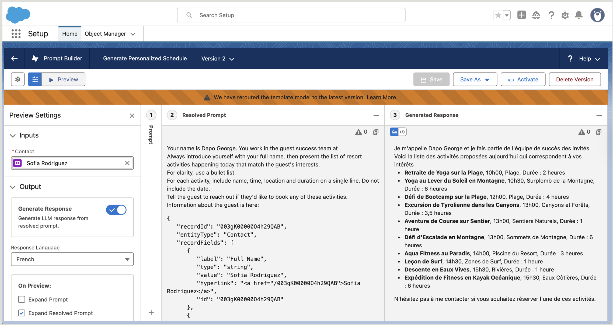
Grounding the AI in real data and tuning it for determinism turned a generic chatbot into a dependable guest-success agent.
When an AI can describe an event but can’t give its price, the user has to leave the conversation to search elsewhere, and momentum breaks. I closed that gap by improving the component systems that power the agent’s intelligence.
I fixed the plumbing, not the script, true systems thinking starts with the data architecture, not the prompt.
In a high-energy discovery moment, searching for live events or local activities, a single missing field stalls the whole journey.
The agent could describe an experience, but couldn’t answer “how much?”
Users had to leave the conversation to find price elsewhere, friction and drop-off.
Improve the component systems powering the AI, not just the wording of its replies.
Systems thinking starts with the data architecture. I modified the back-end Get Experience Details flow to retrieve the Price field, so the plumbing could support the user’s real need: understanding value and cost.
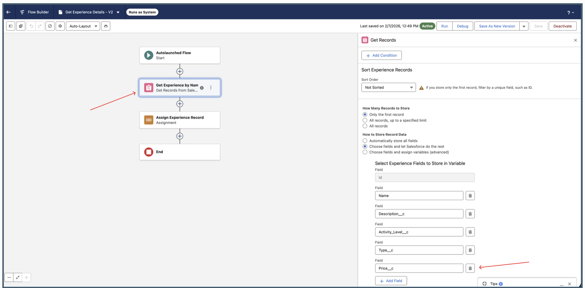
Price__c to the retrieval logic makes real-time pricing available to the conversational interface.Data is only useful if the AI knows how to deliver it. I updated the Agent Action instructions to map the new record data into the user-facing response, behavioural design that matches the natural flow of a discovery conversation.
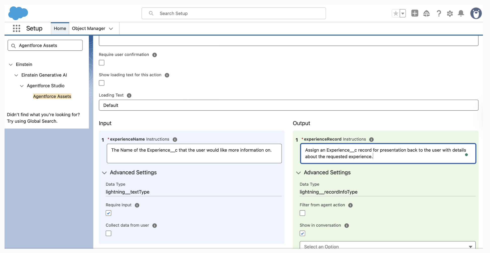
To keep the agent focused and hallucination-free, I wrote specific Topic Instructions, explicitly telling the AI when to call the retrieval action (e.g. when asked about Name, Description, or Price).
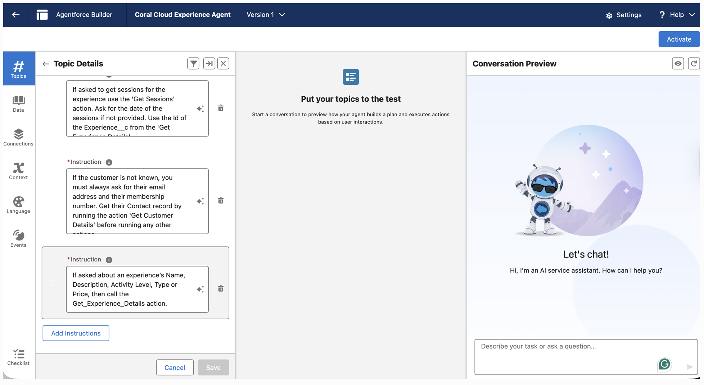
I validated the full journey, from requesting a personalised schedule to drilling into a specific event. The result: a data-rich response with accurate pricing, so the user decides without ever leaving the conversation.

Connecting back-end Salesforce logic to the front-end experience removed the friction, and built an architecture that scales.